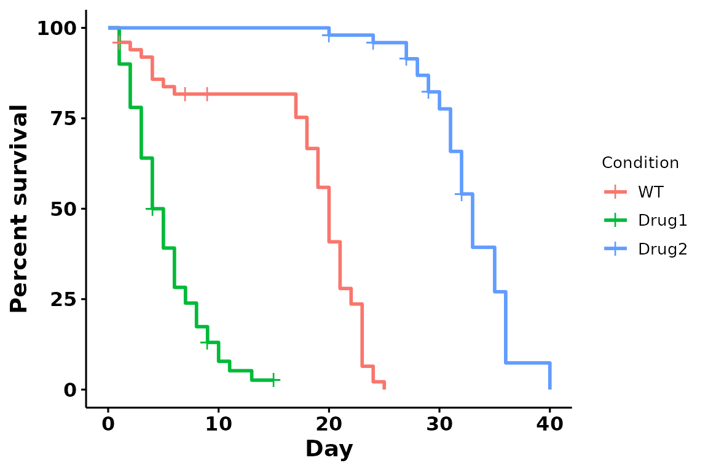
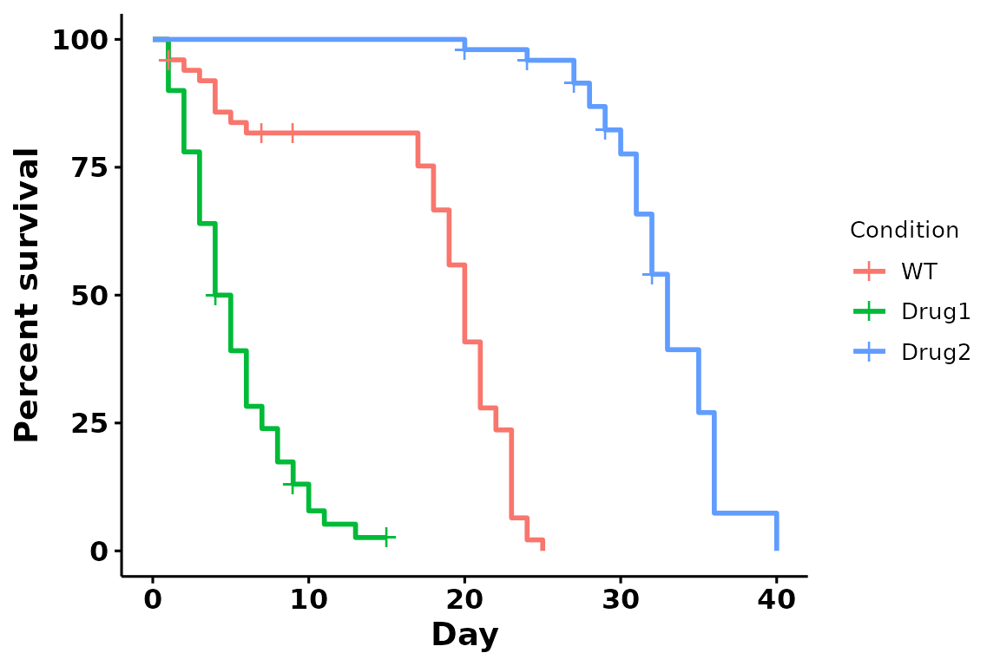
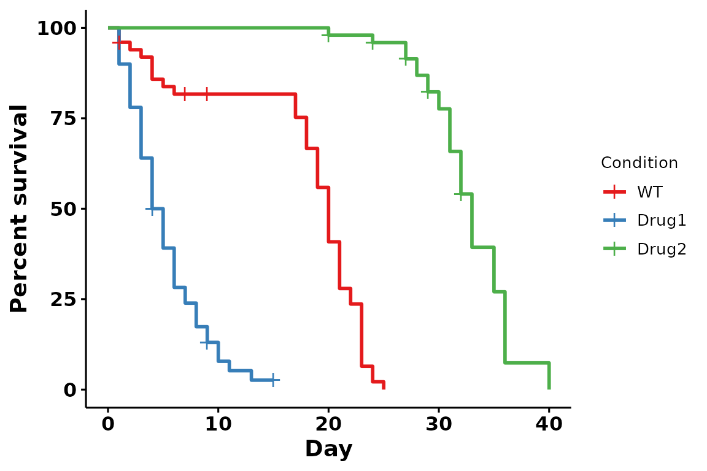
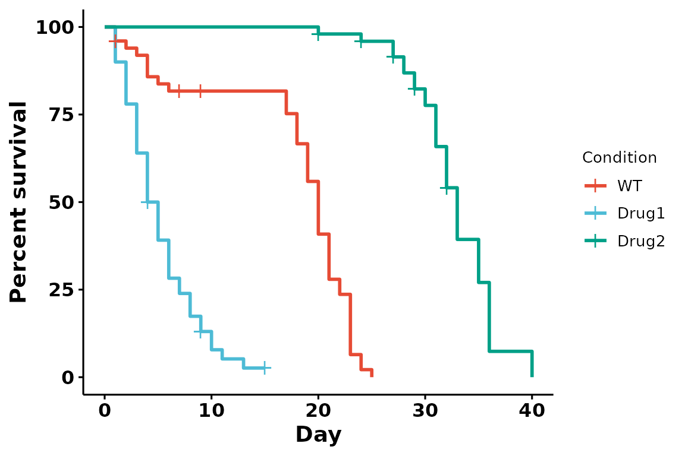
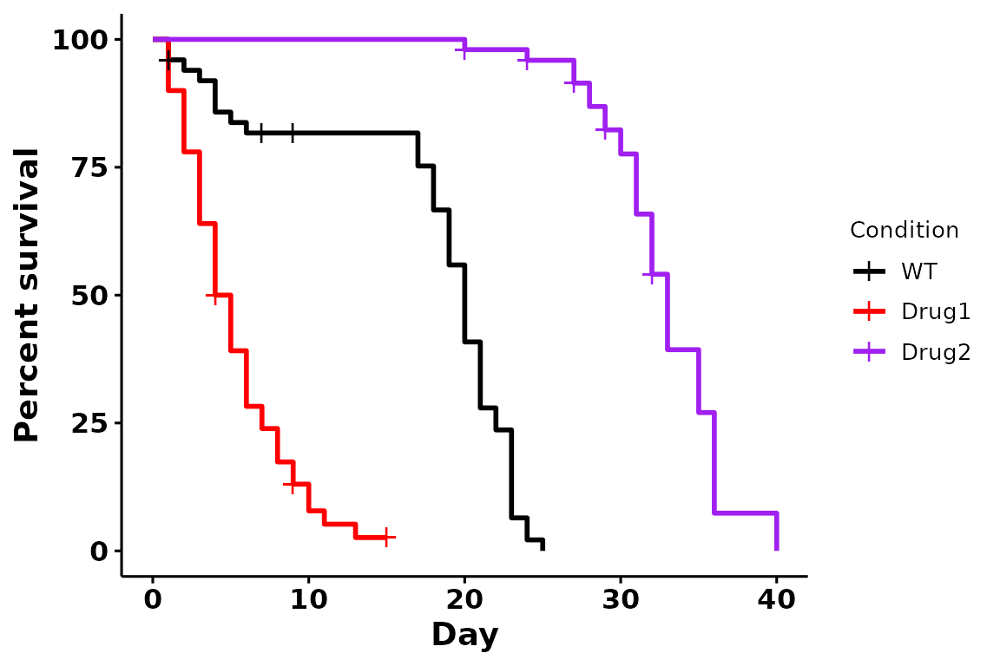
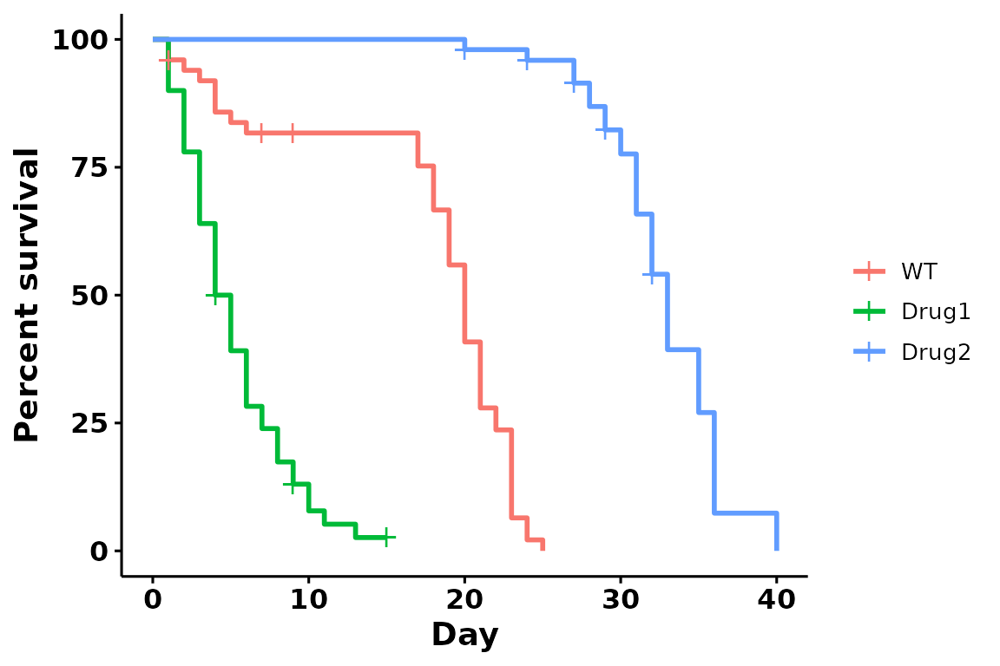
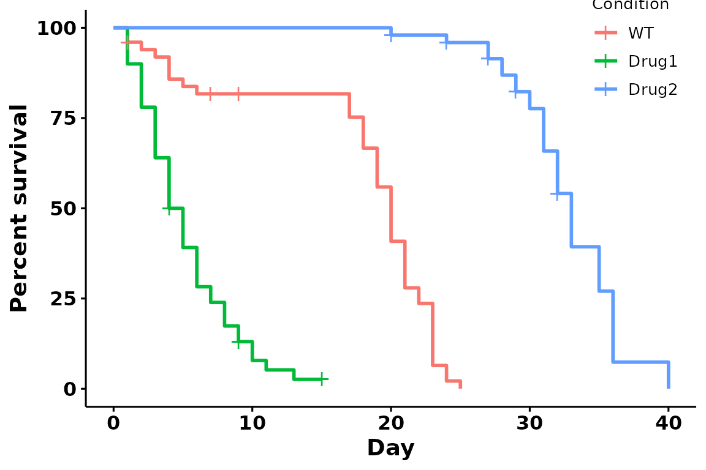
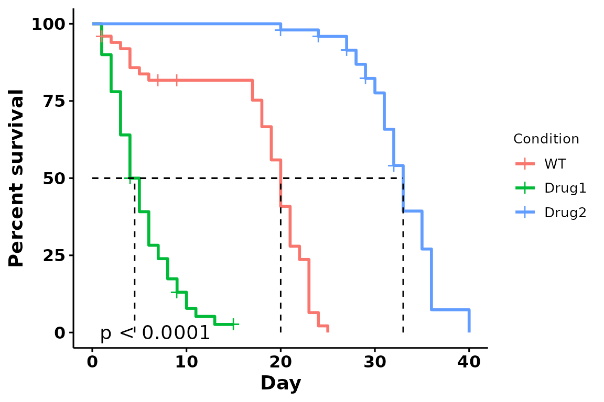
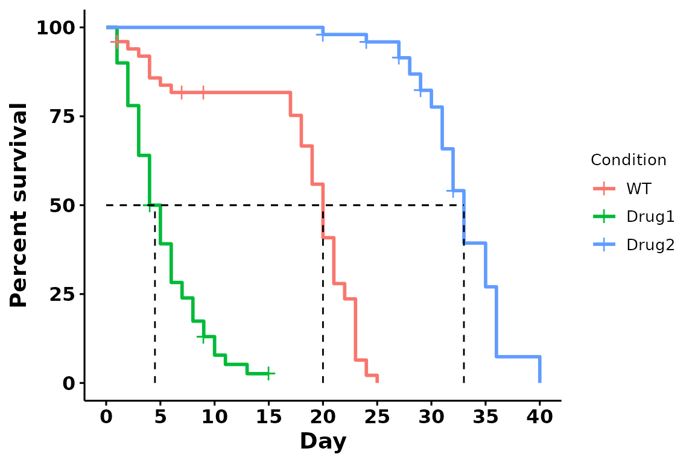
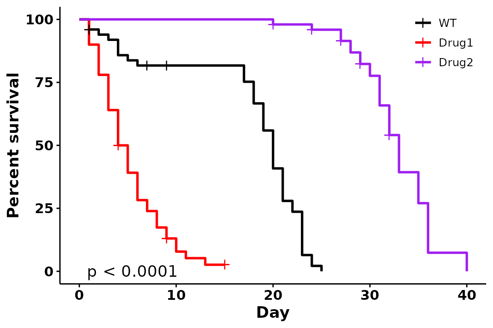

vignette
vignette.RmdIntroduction
The ggbulksurv package provides functions to facilitate
bulk survival analysis.
What is bulk survival analysis?
For some model organisms (eg C. elegans and D. melanogaster), lifespan studies are usually performed in bulk. In bulk survival analysis, researchers place a certain number of organisms in a vial, and count the number of organisms that are dead/censored on any particular day. This produces a table that looks like this:
| condition | day | dead | censored |
|---|---|---|---|
| WT | 10 | 2 | 0 |
| WT | 12 | 0 | 1 |
…
What this package does
Unsurprisingly, survival analysis packages in R (eg
survival, survminer) each row to correspond to
one individual. Wrangling the data manually is often a rather tedious
task, especially if you use Excel.
The ggbulksurv package allows bulk survival analysis to
be run using just one function.
This package simplifies bulk survival analysis through the creation of various helper functions. They are:
-
get_indiv_surv: Converts a bulk survival table into an individual survival table. -
fit_surv: Fits a survival object fromsurvival::survfit(). -
plot_surv: Plots a survival curve usingsurvminer::ggsurvplot()..
For ease of use, all 3 of the above functions have been wrapped in a
single function, run_bulksurv().
Setup
Read in the csv file:
data(sample_data)
head(sample_data) # A quick preview
#> condition day dead censored
#> 1 WT 0 0 0
#> 2 WT 1 2 1
#> 3 WT 2 1 0
#> 4 WT 3 1 0
#> 5 WT 4 3 0
#> 6 WT 5 1 0Getting started (quick)
Run a default analysis with one line:
p <- run_bulksurv(sample_data,
sample_order = c("WT", "Drug1", "Drug2"),
type = "survival")
#> $median_survival
#> Call: survfit(formula = Surv(day, status) ~ condition, data = df_isurv)
#>
#> n events median 0.95LCL 0.95UCL
#> condition=WT 50 47 20.0 19 21
#> condition=Drug1 50 46 4.5 4 6
#> condition=Drug2 50 42 33.0 32 35
#>
#> $logrank
#> Call:
#> survival::survdiff(formula = Surv(day, status) ~ condition, data = df_isurv)
#>
#> N Observed Expected (O-E)^2/E (O-E)^2/V
#> condition=WT 50 47 31.2 7.94 12.9
#> condition=Drug1 50 46 12.5 89.99 128.1
#> condition=Drug2 50 42 91.3 26.60 123.3
#>
#> Chisq= 186 on 2 degrees of freedom, p= <2e-16
#>
#> $pairwise
#>
#> Pairwise comparisons using Log-Rank test
#>
#> data: df_isurv and condition
#>
#> WT Drug1
#> Drug1 2.3e-14 -
#> Drug2 < 2e-16 < 2e-16
#>
#> P value adjustment method: BH
p
Turning off the summary statistics:
run_bulksurv(sample_data, sample_order = c("WT", "Drug1", "Drug2"),
print_stats = FALSE # don't print stats
) 

Color palettes
Brewer palettes
# Using the Set1 brewer palette
run_bulksurv(sample_data,
sample_order = c("WT", "Drug1", "Drug2"),
print_stats = FALSE,
palette = "Set1" # Custom brewer palette
)
Journal palettes
# Using the Set1 brewer palette
run_bulksurv(sample_data,
sample_order = c("WT", "Drug1", "Drug2"),
print_stats = FALSE,
palette = "npg" # Nature palette
)
Specific colors
# Using manual colors
run_bulksurv(sample_data, sample_order = c("WT", "Drug1", "Drug2"),
print_stats = FALSE,
palette = c("black", "red", "purple") # Custom colors
)
Legends
Removing legend title
run_bulksurv(sample_data, sample_order = c("WT", "Drug1", "Drug2"),
print_stats = FALSE,
legend.title = "" # Remove the legend title
)
Placing legend in the plot:
run_bulksurv(sample_data, sample_order = c("WT", "Drug1", "Drug2"),
print_stats = FALSE,
legend.position = c(0.9, 0.9))
Annotations
Adding pvalue and 50% median survival line
run_bulksurv(sample_data, sample_order = c("WT", "Drug1", "Drug2"),
print_stats = FALSE,
add.median.survival = TRUE, # Add median survival
add.pval = TRUE # Add pvalue
)
Changing the x-axis breaks:
run_bulksurv(sample_data, sample_order = c("WT", "Drug1", "Drug2"),
print_stats = FALSE,
add.median.survival = TRUE,
break.x.by = 5 # x-axis: break every 5 days
)
Putting it all together:
run_bulksurv(sample_data, sample_order = c("WT", "Drug1", "Drug2"),
print_stats = FALSE,
palette = c("black", "red", "purple"), # Custom colors
legend.title = "", # Remove legend title
legend.position = c(0.9, 0.9), # Position legend at top right
add.pval = TRUE # Add pvalue
)
Getting started (slower)
This section takes you through the 3 steps that
run_bulksurv() wraps around.
1. Get individual survivals
get_indiv_surv converts a table of bulk survival data
into individual survivals. Each row now represents an individual.
day represents the number of days lived, while
status is either 0 (censored) or 1 (dead).
df_isurv <- get_indiv_surv(sample_data,
sample_order = c("WT", "Drug1", "Drug2"))
head(df_isurv)
#> # A tibble: 6 × 3
#> condition day status
#> <fct> <int> <dbl>
#> 1 WT 1 0
#> 2 WT 1 1
#> 3 WT 1 1
#> 4 Drug1 1 1
#> 5 Drug1 1 1
#> 6 Drug1 1 12. Fit the survival object
fit_surv takes in a data.frame generated by
get_indiv_surv(), and creates a survfit object
using the survival::survfit() function.
FAQs
1. What is censored data?
Status = 1: Dead
Status = 0: Censored.
In biological terms, this is an individual that was alive at this point, but went missing from this dataset.
Some common lab examples that come to mind:
- A fly that escaped when uncapping the vial
- A fly that was accidentally squished when transferring vials
- A fly that was stuck in the food because you forgot to change the vial
- A worm that crawled into the abyss that is an agar crack
Basically, if an individual was alive up till that point, and
died/disappeared due to a reason other than natural
causes, we refer to it as a censored datapoint.
sessionInfo()
#> R version 4.3.1 (2023-06-16)
#> Platform: x86_64-pc-linux-gnu (64-bit)
#> Running under: Ubuntu 22.04.3 LTS
#>
#> Matrix products: default
#> BLAS: /usr/lib/x86_64-linux-gnu/openblas-pthread/libblas.so.3
#> LAPACK: /usr/lib/x86_64-linux-gnu/openblas-pthread/libopenblasp-r0.3.20.so; LAPACK version 3.10.0
#>
#> locale:
#> [1] LC_CTYPE=C.UTF-8 LC_NUMERIC=C LC_TIME=C.UTF-8
#> [4] LC_COLLATE=C.UTF-8 LC_MONETARY=C.UTF-8 LC_MESSAGES=C.UTF-8
#> [7] LC_PAPER=C.UTF-8 LC_NAME=C LC_ADDRESS=C
#> [10] LC_TELEPHONE=C LC_MEASUREMENT=C.UTF-8 LC_IDENTIFICATION=C
#>
#> time zone: UTC
#> tzcode source: system (glibc)
#>
#> attached base packages:
#> [1] stats graphics grDevices utils datasets methods base
#>
#> other attached packages:
#> [1] ggbulksurv_0.0.0.9000
#>
#> loaded via a namespace (and not attached):
#> [1] gtable_0.3.4 xfun_0.40 bslib_0.5.1 ggplot2_3.4.3
#> [5] rstatix_0.7.2 lattice_0.21-8 vctrs_0.6.3 tools_4.3.1
#> [9] generics_0.1.3 tibble_3.2.1 fansi_1.0.4 pkgconfig_2.0.3
#> [13] Matrix_1.6-1 data.table_1.14.8 RColorBrewer_1.1-3 desc_1.4.2
#> [17] lifecycle_1.0.3 farver_2.1.1 compiler_4.3.1 stringr_1.5.0
#> [21] textshaping_0.3.6 munsell_0.5.0 ggsci_3.0.0 janitor_2.2.0
#> [25] carData_3.0-5 snakecase_0.11.1 htmltools_0.5.6 sass_0.4.7
#> [29] yaml_2.3.7 pillar_1.9.0 pkgdown_2.0.7 car_3.1-2
#> [33] ggpubr_0.6.0 jquerylib_0.1.4 tidyr_1.3.0 cachem_1.0.8
#> [37] survminer_0.4.9 abind_1.4-5 km.ci_0.5-6 tidyselect_1.2.0
#> [41] digest_0.6.33 stringi_1.7.12 dplyr_1.1.3 purrr_1.0.2
#> [45] labeling_0.4.3 splines_4.3.1 rprojroot_2.0.3 fastmap_1.1.1
#> [49] grid_4.3.1 colorspace_2.1-0 cli_3.6.1 magrittr_2.0.3
#> [53] survival_3.5-5 utf8_1.2.3 broom_1.0.5 withr_2.5.0
#> [57] scales_1.2.1 backports_1.4.1 lubridate_1.9.2 timechange_0.2.0
#> [61] rmarkdown_2.24 gridExtra_2.3 ggsignif_0.6.4 zoo_1.8-12
#> [65] ragg_1.2.5 memoise_2.0.1 evaluate_0.21 knitr_1.44
#> [69] KMsurv_0.1-5 survMisc_0.5.6 rlang_1.1.1 xtable_1.8-4
#> [73] glue_1.6.2 jsonlite_1.8.7 R6_2.5.1 systemfonts_1.0.4
#> [77] fs_1.6.3